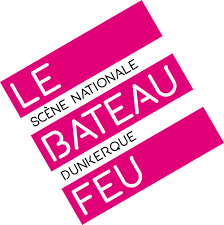
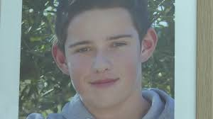

Le harcèlement est un véritable fléau dans le monde, c'est un comportement destructeur et dévastateur. Environ 20 élèves mettent fin à leurs jours suite au harcèlement en France par an. Entre 700 000 et 1 000 000 de cas sont recensés en France, C'EST ÉNORME ! Et cela se produit dans tous les pays du monde... Un enfant sur trois est victime de harcèlement. Alors pourquoi autant de haine ? Pourquoi devoir rabaisser autant les gens ? C'est ce qui nous a motivés à jouer ce spectacle : combattre le harcèlement, montrer que, même si on n'aime pas telle ou telle personne, il ne faut pas recourir au harcèlement pour aller au bout. Mais au fond, le harcèlement, c'est quoi ? C'est un mode de persécution consistant à enchaîner de façon répétée des agissements ou des paroles hostiles afin de démoraliser et d'affaiblir psychologiquement la personne qui en est victime. Autrement dit, insulter et dénigrer une personne sans cesse sur son physique, une différence de couleur de peau, la couleur des yeux, une religion, etc. Aujourd'hui, notre but n'est pas d'arrêter cela seuls, mais de faire prendre conscience aux jeunes, aux professeurs et aux parents qu'ils ont tous un rôle tout aussi important à jouer, et qu'ils ont la capacité d'éviter des milliers de dépressions et des dizaines de suicides chaque année.
Deux témoignages m'ont particulièrement touché : d'abord, celui de Camélia, une jeune fille de 17 ans qui s'est suicidée en se jetant sous les roues d'un train. Elle était victime de harcèlement depuis plusieurs années et n'était pas aidée ; le directeur et le personnel du lycée auquel elle appartenait cachaient l'affaire et rejetaient constamment la faute sur elle. Ensuite, l'histoire de Christopher Fallais, 16 ans, dont l'affaire a inspiré directement notre pièce et nous a motivés à la créer et à la jouer. Il a été victime de harcèlement et de cyberharcèlement (le fait d'être harcelé sur les réseaux sociaux), tout cela parce qu'il faisait de l'équitation. Pourquoi raconter ces histoires ? Parce qu'elles illustrent directement les désastres du harcèlement face à une simple passion ou une différence qui, pourtant, fait la beauté du monde. Ces histoires témoignent aussi de la non-réaction de certains : on se dit « et si j'avais fait ça, et si j'avais réagi, et si j'avais prévenu les profs, et si je n'avais pas ri ? », mais c'est trop tard, et on s'en veut.

Nous voulons réellement créer ce spectacle car, pour nous, il est primordial de faire passer un message, et pas n'importe lequel : il faut que parents, adolescents, enfants, professeurs et chefs d'établissement sachent qu'ils ont tous un rôle, certes différent mais tout aussi important, dans la vie des enfants et des adolescents. S'ils négligent ce rôle, cela peut avoir des répercussions démesurées sur la vie, la santé et la psychologie de chacun. Notre spectacle a aussi pour but de faire prendre conscience que, petits, grands, noirs, blancs, aux yeux bruns, verts ou aux cheveux roux, nous avons tous une différence, une particularité physique. Au lieu de se taper dessus et de s'insulter à cause de ces différences, y compris religieuses, il faut savoir les accepter et surtout vivre avec, parce que ces différences font toute la beauté, l'intelligence et le rayonnement de l'être humain. Il faut aussi savoir se respecter, pas forcément s'aimer, mais se respecter. Ce n'est pas parce que je n'aime pas Pierre, Paul ou Jacques que je peux aller l'insulter tous les jours ; ce n'est pas un jeu. Nous sommes motivés et très heureux de présenter le spectacle « Non au harcèlement » comme notre première représentation, et nous allons l'honorer comme il se doit.
Nous jouons en mai-juin 2026 pour toutes les classes de seconde professionnelle d'EPID-VAUBAN, et nous jouerons les 17, 19 et 24 novembre pour toutes les secondes générales et professionnelles d'EPID-VAUBAN. Nous irons également dans un collège à Hazebrouck pour jouer devant des collégiens. Notre but sera de susciter chez eux de l'empathie et surtout de leur faire prendre conscience que les actes peuvent avoir de grandes répercussions.